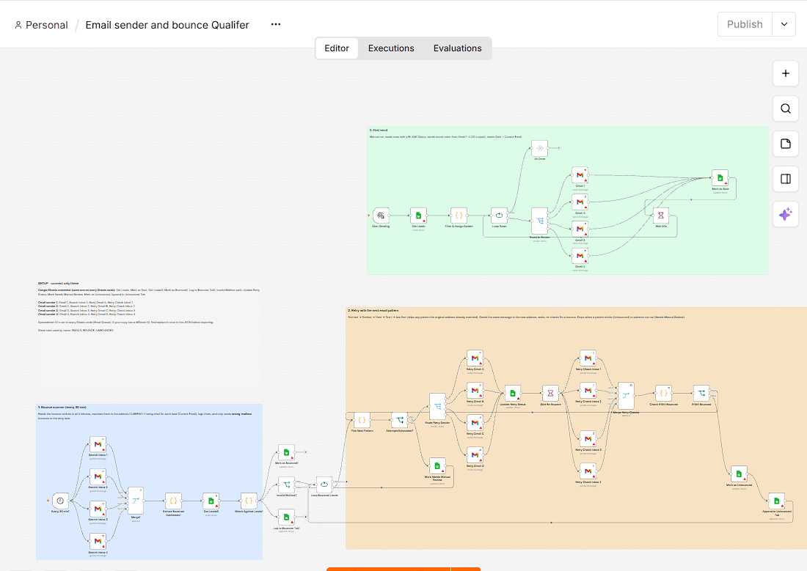
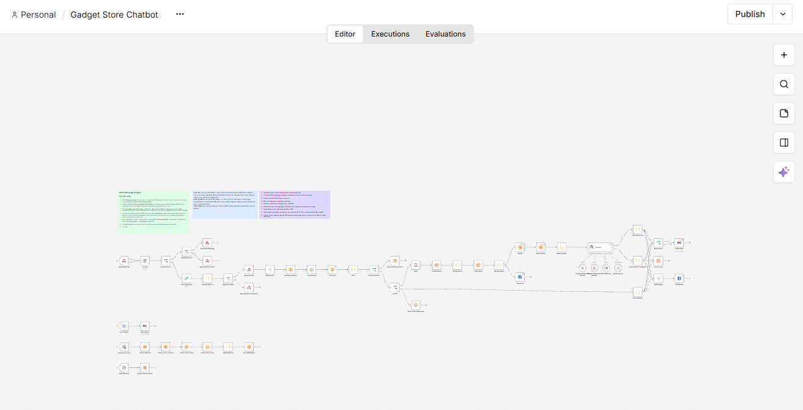
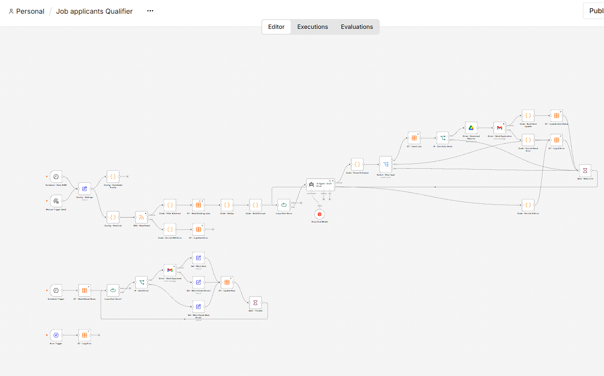
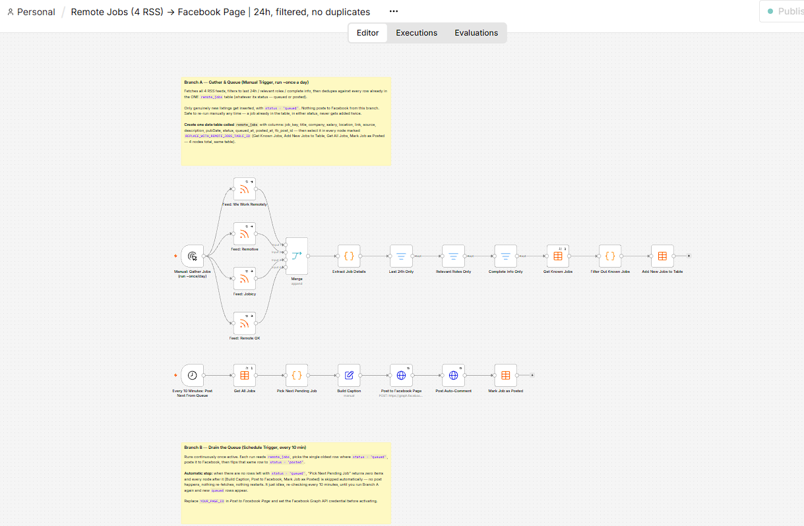
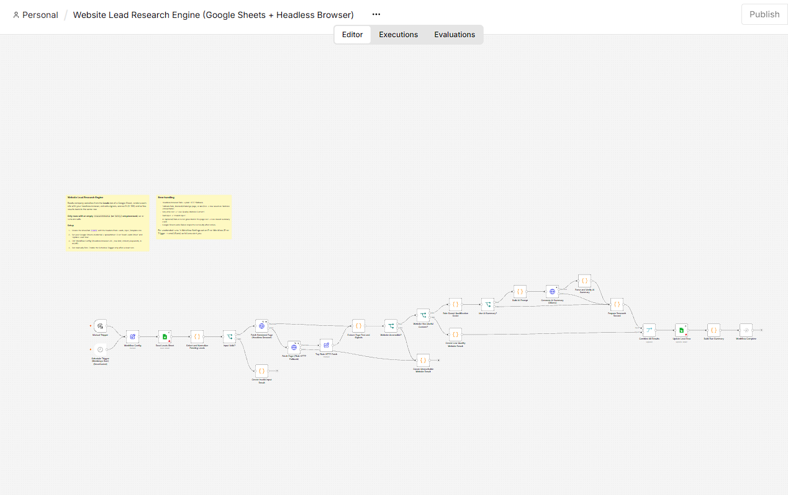
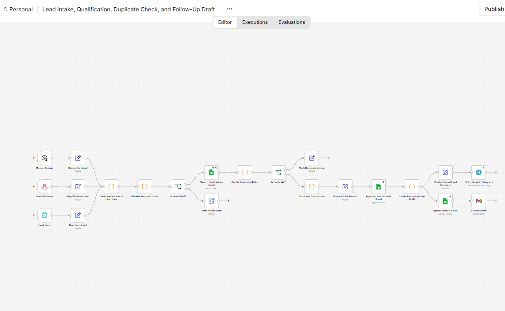
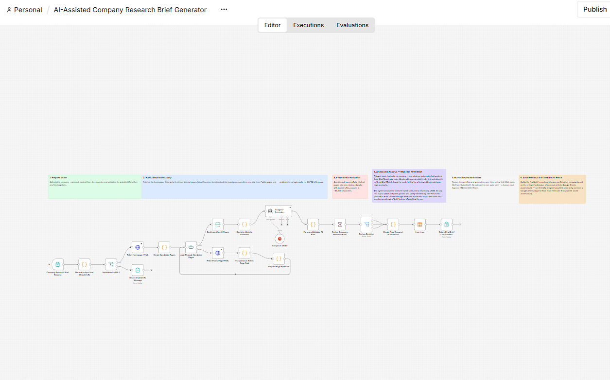
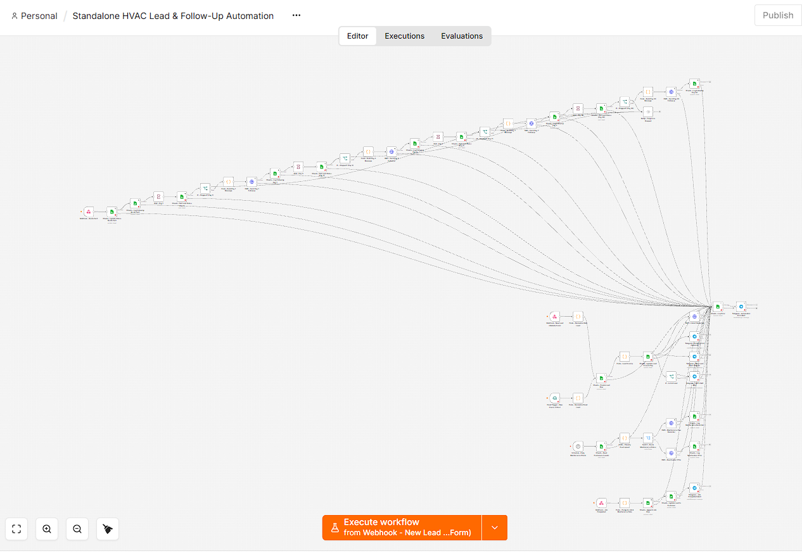

Lead Research
I find the businesses and people who actually need what you sell: owners and decision-makers, not random names from a database.
n8n: the Research Engine scores every website for fit → Find your market →Lead Generation • Marketing Automation • SEO & Websites • Butuan City, Philippines
I’m George Fernando. I bring the traffic in with websites and SEO, find the real decision-makers, verify every contact, and automate the follow-up with n8n and AI — so your team talks to real people, not dead lists.

OPEN TO REMOTE WORK
What I Do
No vague promises. SEO brings the traffic in, research finds the buyers, and automation follows up. Four services, one pipeline full of real people who can actually buy from you.
I find the businesses and people who actually need what you sell: owners and decision-makers, not random names from a database.
n8n: the Research Engine scores every website for fit → Find your market →Clean, organized lead lists built for your market and your offer, ready for your sales team or your CRM.
n8n: new leads are cleaned and deduped automatically → Build your list →Every email and phone checked by hand. No dead contacts, no guesses, no bounced emails wasting your time.
n8n: bounced emails are retried automatically → Verify your data →WordPress sites, on-page and technical SEO, and content that brings in traffic. Real Search Console results, not theory.
n8n: website leads are captured and followed up automatically → Grow your website →My Method
This is how every lead list is built. The same method, every time, so you always know what you are getting.
I research your market and find the businesses that fit your offer, then find the owner or decision-maker inside each one.
n8n: the Research Engine scores websites for fit →I check every contact: is this the right person, is the email real, is the business still open? Bad contacts never reach your list.
n8n: bounced emails are retried automatically →I add what your sales team needs: work email, phone, LinkedIn, company size, and the buying signal that shows they are ready.
n8n: new leads are cleaned and deduped first →n8n and AI handle the repetitive work, I check the results, and you get a clean, verified list on time, every time.
See the 8 workflows →Featured Work
Every job as a case study: the problem, what I did, and the result with real numbers.
Lead Researcher • Feb 2024 – Aug 2026
View proofThe client’s software only works for real estate teams on Follow Up Boss or BoldTrail CRM, so a team is only a real lead if it uses one of those. And every team has a different decision-maker, depending on how the team is built.
Manual research on team websites, Zillow, Homes.com, and Realtor.com. Check the CRM first, find the right owner or decision-maker, verify every email by hand, and remove duplicates — because these are teams, not individuals, and the same team shows up again and again.
A clean list of unique teams the client’s software can actually serve. The CRM now holds 49,981 contacts — I personally built 30,000 of them.
30,000 team records I personally built
Researcher Project Lead • Jul – Dec 2023
View proofA motivational speaker needed bookings — and merchandise sales — but had no list of who to contact at schools.
Compiled emails for different departments at high schools and colleges in Ohio and neighboring states, then set up email automation to reach them. Also researched upcoming events — including Black conferences — and tracked where other speakers booked, so the same events could be pitched.
Multiple bookings, with up to 3 events booked in a single month.
3 events booked in one month
Lead Research & Outreach • Jun – Oct 2026
The employee emails are not on the internet. You cannot just search for them.
Got every employee name from the company website, LinkedIn, and RocketReach. Worked out the email format the company uses. Sent test emails — the ones that did not bounce went on the final list for the cold email campaign.
A verified list of employee emails for property developers worldwide, used to invite them to exhibit to Chinese investors.
~1,000 verified emails compiled per day
Website Work
Website Manager & SEO • Jan – Jun 2024
View proofA garage door business needed more website visits — and more sales from the website.
Built the WordPress website from scratch, then ran the SEO: keyword research, on-page and technical SEO, images and image tags, loading speed, and mobile-friendly pages.
Website visits went up — and sales too.
544 clicks, 41.4K impressions
Website & SEO • Apr – Jun 2024
View proofThe website was already there, but it needed traffic.
Added backlinks and optimized the site: on-page and technical SEO.
Search Console (2024): 4.78K clicks and 422K impressions.
4.78K clicks, 422K impressions
Website & SEO • Oct – Dec 2024
View proofA dumpster rental business needed a services page that could rank and bring in calls.
Created the services page — images, map, FAQ — with on-page and technical SEO.
The page ranked and brought in calls.
New services page, ranking and bringing calls
Website & Store Builder • Oct 2026 – Present
View proofA book launch needed a bundle sales page that could actually sell — products, cart, and checkout.
Built the bundle sales page in GoHighLevel: 4 bundle options (30 / 50 / 100 / 200 workbooks), products, cart, and checkout connected.
The page is selling bundles.
4 bundles, selling now
SEO Outreach • Jan – Dec 2021
Each client needed backlinks to rank — but a good backlink has to come from a site that fits the client’s topic and will actually accept a link. You cannot just list any website.
Researched backlink opportunities for different clients. For a client selling senior insurance, I targeted blogs that talk about seniors, organization websites, and community websites that let us place links. Checked each site, found the author or contact, and prepared it for outreach.
Backlink opportunities researched for different clients for a full year — each one checked for fit and ready for outreach.
1 year of backlink research, multiple clients
Automation
Real automations I built in n8n. Click any workflow to see the screenshot, the problem it solves, and how it works.

01n8n • 40 nodes
Bulk email that fixes its own bounces, so no lead is lost to a bad address.
View workflow
02n8n • 54 nodes
An AI chatbot that answers customers on Messenger using the store's real stock, not guesses.
View workflow
03n8n • 41 nodes
Finds new matching jobs every morning and drafts the application email for each one.
View workflow
04n8n • 18 nodes • Live
Collects fresh remote jobs every day and posts them to a Facebook Page by itself. No duplicates.
View workflow
05n8n • 17 nodes
Opens company websites, checks if they are a good fit, and scores them into a sheet.
View workflow
06n8n • 28 nodes
Every new lead gets cleaned, checked for duplicates, scored, saved, and a follow-up email written.
View workflow
07n8n • 21 nodes
Reads a company's website and writes a research brief for outreach — checked by a human first.
View workflow
08n8n • 55 nodes
Replies to new leads by SMS in seconds, chases quotes for 30 days, and reminds customers about maintenance.
View workflowJourney
From data annotation to lead research for real clients, one skill built on the next.
Let’s Work Together
Tell me about your market and your offer, and I will show you the leads I can find. First reply within one business day.